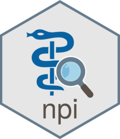

Summary method for npi_results S3 object
Source: R/npi_results_s3.R
npi_summarize.npi_results.RdPrint a human-readable overview of each record return in the results from a
call to npi_search. The format of the summary is modeled after
the one offered on the NPI registry website.
Usage
# S3 method for class 'npi_results'
npi_summarize(object, ...)Value
Tibble containing the following columns:
npiNational Provider Identifier (NPI) number
nameProvider's first and last name for individual providers, organization name for organizational providers.
enumeration_typeType of provider associated with the NPI, either "Individual" or "Organizational"
primary_practice_addressFull address of the provider's primary practice location
phoneProvider's telephone number
primary_taxonomyPrimary taxonomy description. If no taxonomy is marked as primary for a record, the first listed taxonomy is used.
Details
Missing optional second address lines are treated as empty strings. Missing required address components leave the full address missing.
Examples
data(npis)
npi_summarize(npis)
#> # A tibble: 10 × 6
#> npi name enumeration_type primary_practice_add…¹ phone primary_taxonomy
#> <int> <chr> <chr> <chr> <chr> <chr>
#> 1 1.19e9 ALYS… Individual 5 E 98TH ST FL SREET4… 212-… Physician Assis…
#> 2 1.31e9 MARK… Individual 16 PARK PL, NEW YORK,… 212-… Orthopaedic Sur…
#> 3 1.64e9 SAKS… Individual 10 E 102ND ST, NEW YO… 212-… Internal Medici…
#> 4 1.35e9 SARA… Individual 1335 DUBLIN RD STE 20… 614-… Occupational Th…
#> 5 1.56e9 AMY … Individual 1176 5TH AVE, NEW YOR… 212-… Internal Medici…
#> 6 1.79e9 NOAH… Individual 140 BERGEN STREET LEV… 973-… Obstetrics & Gy…
#> 7 1.56e9 ROBY… Individual 9 HOPE AVE STE 500, W… 781-… Nurse Practitio…
#> 8 1.96e9 LENO… Organization 100 E 77TH ST, NEW YO… 212-… Nurse Anestheti…
#> 9 1.43e9 YONG… Individual 34 MAPLE ST, NORWALK,… 203-… Psychiatry & Ne…
#> 10 1.33e9 RAJE… Individual 12401 E 17TH AVE, AUR… 347-… Nurse Practitio…
#> # ℹ abbreviated name: ¹primary_practice_address